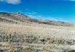
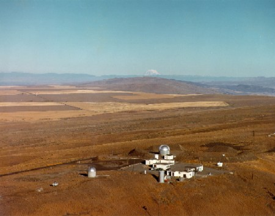

Late last winter (1999) I got an opportunity to go up to the top of Rattlesnake. It's our local mountain and 1088 meters above sea level. A friend, John Schmelzer from PNNL, took me up on one of his trips to work on instrumentation.
Much of the land around the mountain is a restricted federal zone and is part of ALE (Arid Lands Ecology Reserve). You can't just drive or hike up. So it's a special treat to be able to check out the views from the top.
It was a bit windy up there. I set my camera to 1/1000s shutter speed to compensate for the wind pushing me around. Here were the readings from the Rattlesnake weather sensors:
- Station# 20 (RSNK) at 3560 ft above MSL
- TIME: 14: 0: 0 PST Date: 2/10/99
- AVE WIND DIRECTION = 237
- AVE WIND SPEED = 39
- MAX WIND SPEED = 46
- AVE TEMP = 29.3
- Wind Chill = -6.0

{kind=link}

This photo (click for larger version) shows an overhead view of the facilities at the top of Rattlesnake mountain (including two observatories). I believe it's Mt. Rainier (or maybe Adams) that shows just over the horizon.
From this view you see the gradual sloping off the back side of the mountain onto the high farming plateau. What you don't see is the very steep face that starts at the bottom edge of the photo and leads dramatically down into the Columbia River basin where we live.